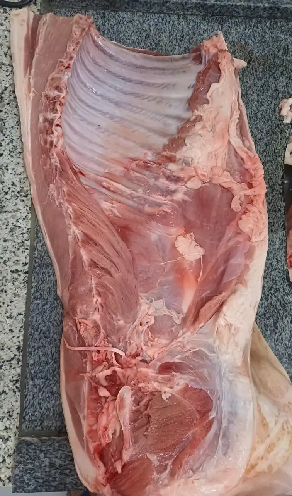
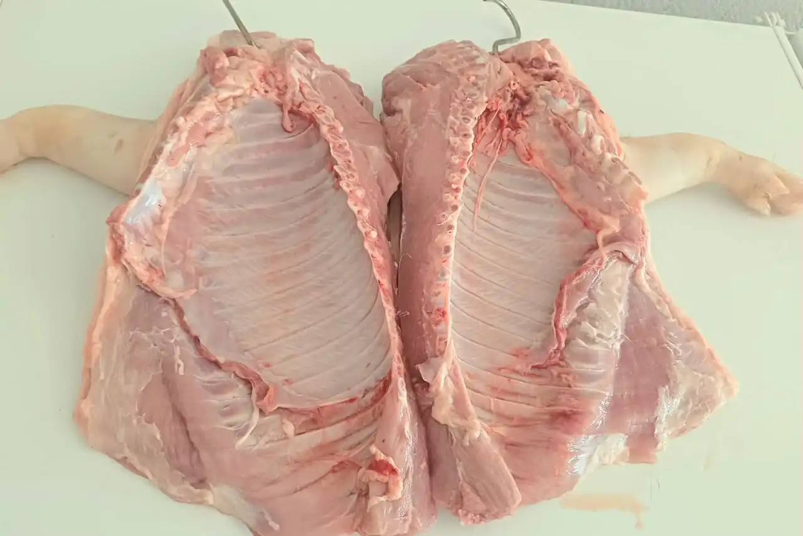
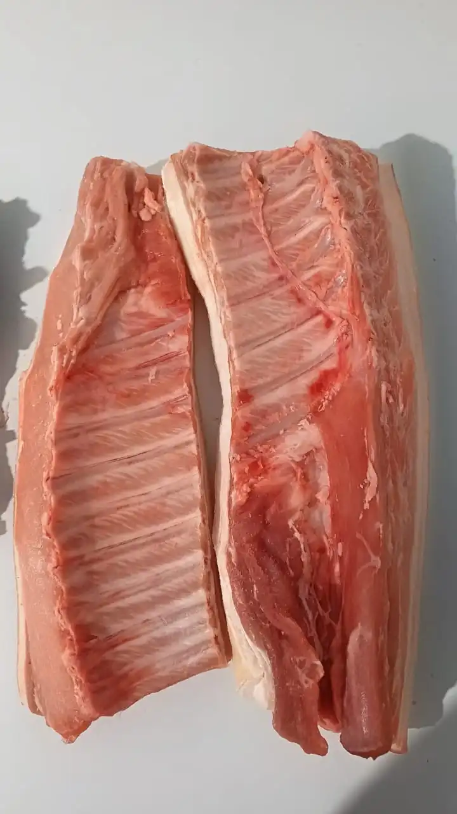
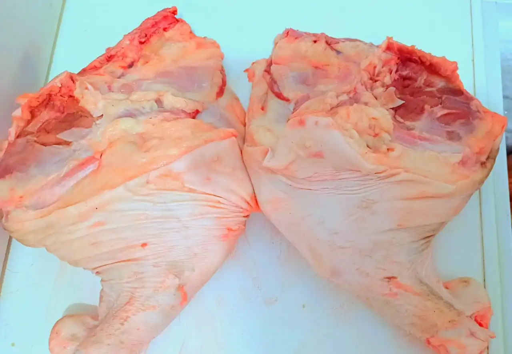

Porco Caipira
Escolha o Corte:
Retire na loja: R. Bom Jardim, 379 — Centro, Cáceres.
Porco Caipira: O Sabor Inigualável da Carne Criada Solta na Roça
O porco caipira é criado com total liberdade de movimento, em terreiros amplos onde pode se alimentar de forma natural — raízes, frutas, grãos e ração caseira sem hormônios de crescimento nem confinamento. Essa vida ao ar livre faz toda a diferença na composição da carne: o exercício constante desenvolve a musculatura de forma equilibrada, resultando em uma carne mais firme, com gordura bem distribuída e um sabor muito mais pronunciado do que a carne suína industrializada.
A grande diferença entre o porco caipira e o suíno de criatório industrial está justamente na profundidade do sabor. Enquanto o porco confinado tende a ter carne mais aquosa e insípida, o caipira oferece uma gordura aromática e uma textura que responde muito melhor ao calor da brasa ou da panela de pressão. É essa gordura que confere ao prato final aquele sabor de roça que nenhum tempero pronto consegue replicar.
Trabalhamos com os principais cortes do porco caipira: a costela, perfeita para a brasa lenta; o pernil, ideal para assar inteiro com tempero de alho e limão; o suan, predileto do interior para o ensopado de domingo; a paleta e a banda para quem quer variedade; o toicinho para incrementar feijão e refogar legumes; e o pé de porco para caldos encorpados e nutritivos.
O porco caipira é um produto sazonal — disponível conforme os ciclos de criação. Por isso, recomendamos consultar disponibilidade diretamente pelo WhatsApp antes de fazer o pedido. A encomenda pode ser feita com antecedência e você retira direto na loja, sempre com a garantia de frescor e procedência de quem cria com responsabilidade.